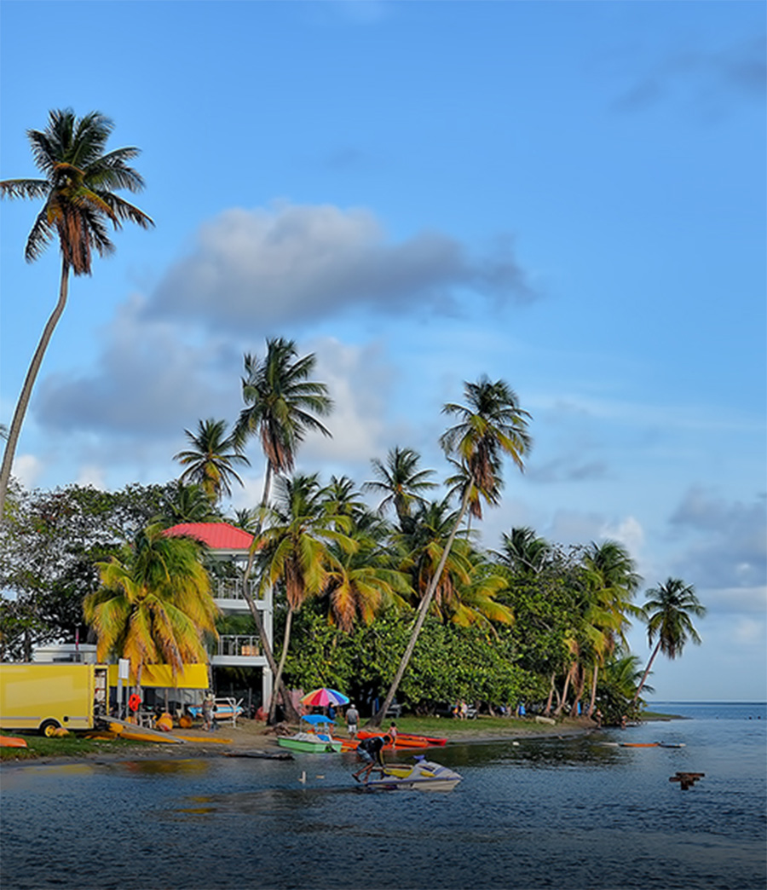
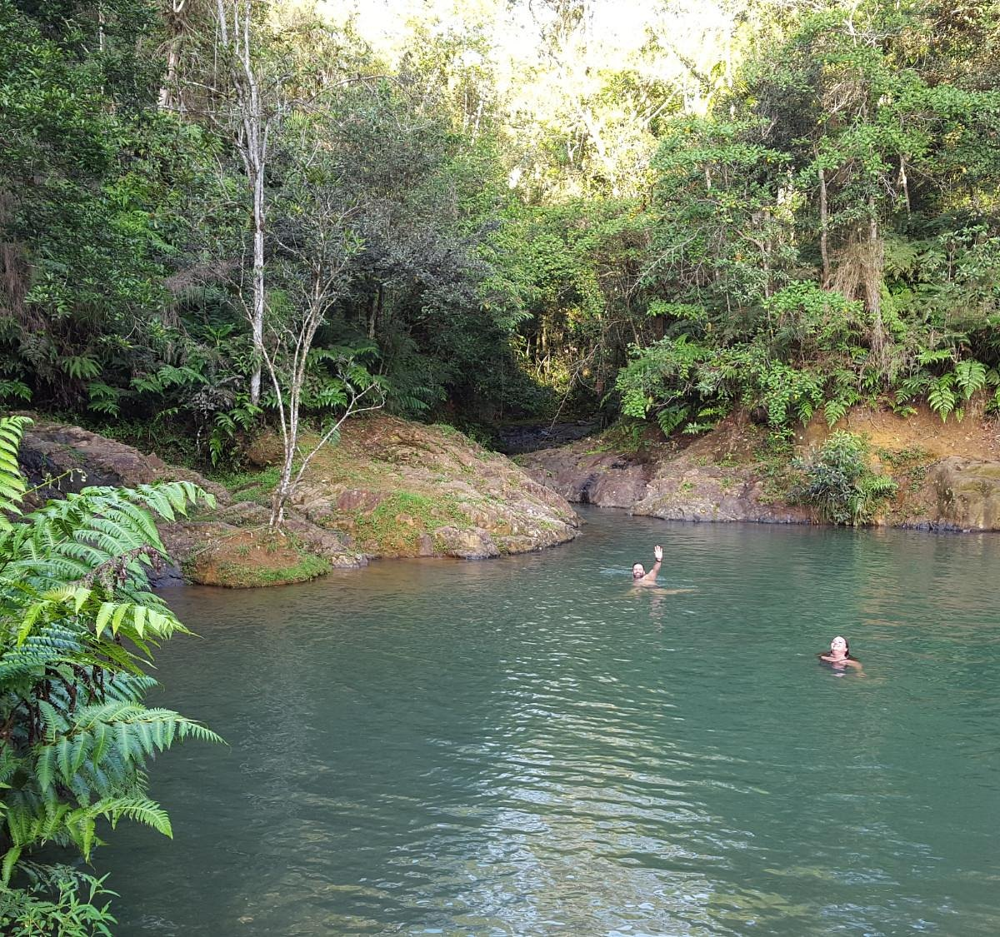
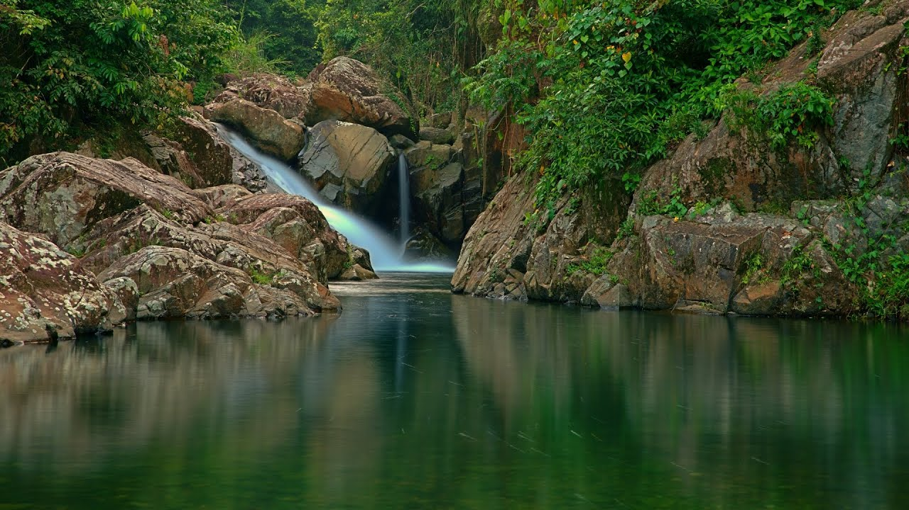

Playa Villa Pesquera de Patillas
La Playa Villa Pesquera está localizada en el Barrio Bajo de Patillas. Para llegar debe conducir por la carretera #3, cuando encuentre el Colmado Villa doble a la derecha si viene de sur a norte. Esta playa es ideal para snorkeling, nadar o coger un bronceado. Además tiene coloridos columpios para el disfrute de los niños y un miradero de tres pisos que le permite una vista espectacular a sus alrededores.
Charco Azul
Este pozo de agua dulce para nadar tiene entre 30 y 40 pies de ancho. Es alimentado por 2 pequeños arroyos que se derraman en el charco formando una linda cascada de 8 a 10 pies. El agua alrededor de los bordes no es profunda, tal vez un par de pies. Puedes sentarte en los bordes y observar a los pececitos que llaman hogar a este estanque.
Pueden visitar en:
Cascada El Survivor
Cascada Survivor es una cascada en Patillas, Puerto Rico. La cascada es un gran lugar para dar un paseo o caminar y disfrutar de la belleza de la naturaleza. Explora el poder y la fuerza del agua y observa cómo se precipita hacia abajo.
Pueden visitar en:
Playa Inches
Playa Inches está ubicada en el pueblo de Patillas justo al lado de la carretera #3. Esta hermosa playa es muy frecuentada por surfers, ya que casi todo el año tiene olas aptas para practicar todo tipo de deportes acuáticos. Esta playa es particular debido a que no tiene arena; su superficie es de roca china o de río. Cerca de la playa hay colmados y restaurantes donde podrás disfrutas de sabrosas frituras y suculentos platos. La playa es uno de los surfing spots favoritos del area sur de Puerto Rico. Es una playa hermosa, con su distintivo color aqua, su fondo en piedras chinas y “fire coral”. En la orilla hay muchos árboles, perfecto para cobijarse en períodos de descanso.
Pueden visitar en: